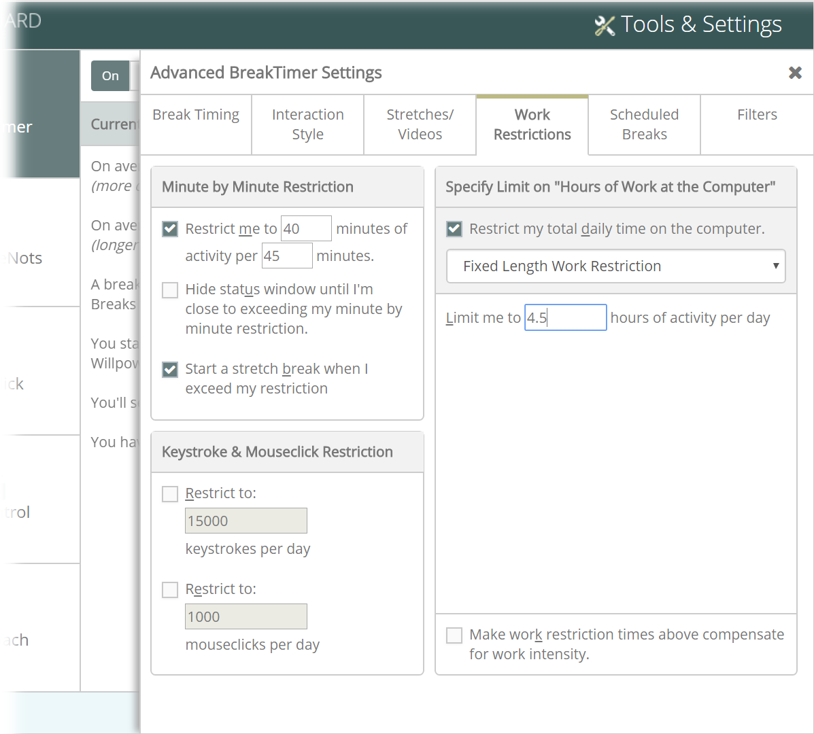
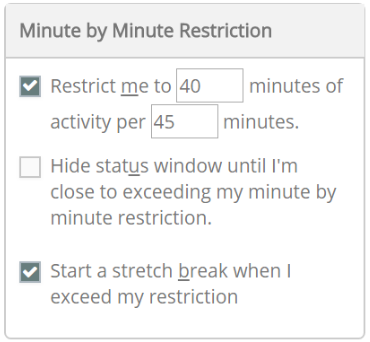
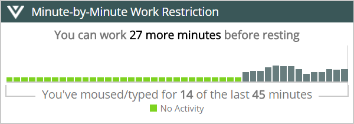
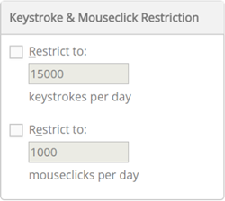
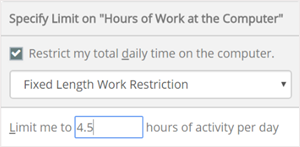

One way to help avoid injury or discomfort at the computer is to limit exposure to the computer with a work restriction. There are different types of work restrictions, and you should work with your ergonomist or health professional to select the limit or limits that are most appropriate for you.
With RSIGuard's Work Restrictions feature, RSIGuard alerts you when you have reached your prescribed work limit. Although the limit is not strictly enforced, RSIGuard helps keep you aware of how well you are complying, and your compliance is recorded as part of your DataLogger data.
If you have a computer-related injury, your doctor may have suggested or required a work restriction in order for you to continue working. The most typical common work restrictions are:
RSIGuard can help you follow each of these types of restrictions or a combination of them.
If your doctor plans to give you a work restriction, we recommend that you provide the doctor printouts of your usage as recorded by RSIGuard:
This information can assist your doctor in selecting a meaningful restriction based on objective data.
Minute-by-Minute Restriction - These common restrictions are often expressed as "limit yourself to working no more than 45 minutes on the computer per hour".
The example shows to restrict your work when you work 40 minutes or more during the last 45 minutes.

Also, your restriction status will be shown in a window like an example below.

Keystroke & Mouseclick Restriction - If checked, these restrictions prompt you to stop working for the day when you have reached the specified number of keystrokes or mouseclicks.

Specify Limit on "Hours of Work at the Computer" - Allows you to specify a time limit on the computer per day. You can specify a single daily limit, or a limit that varies by day, or a limit that varies by how much you worked the previous few days. When you reach the hourly limit, you are notified and given the option for an extension.

Tip:
Do not use this option if your work limit exists primarily to avoid static exposure, because any intensity of work will expose you to the same amount of static posture. For example, if the goal is to limit sitting, don't use this option. However, if the goal is to limit hours of clicking the mouse or typing, use this option because it will adjust your restriction based on the intensity of your mouse or keyboard use.